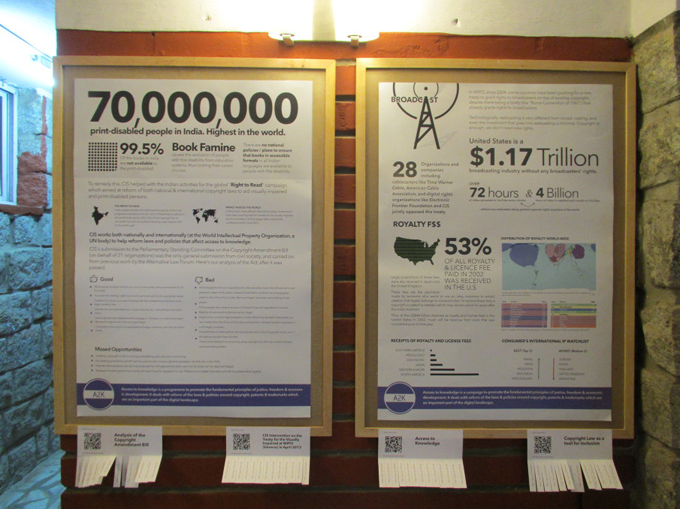
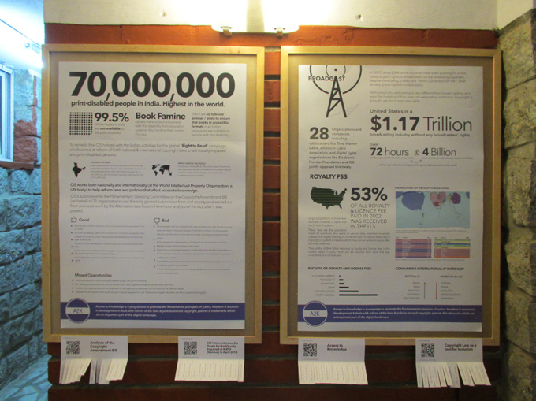

CIS is celebrating it's 5th anniversary and it wanted to show it's work in the area of openness and access to knowledge, through a series of infographics, which was definitely an opportunity to not only promote their efforts but also an opportunity to sensitise the viewers towards the otherwise unseen issues that the visually impaired or the general internet user faces, today.
The viewers could also take back links to the articles, they had just read, as tear-aways.
 
